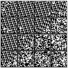
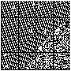
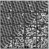
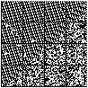
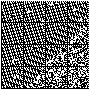
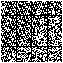

This page contains Tarsnap key for foobar.com.
This data is encoded using multiple ISO/IEC 16022:2006 (Data Matrix) ECC 200 barcodes. To reproduce the data, scan every barcode from left to right and from top to bottom, and concatenate their contents without anything in between.
The SHA-256 digest of the original data is f0c4795412396865f093618c282949f6134861c5c122b43ff62e38d8f5b0e0cd.
